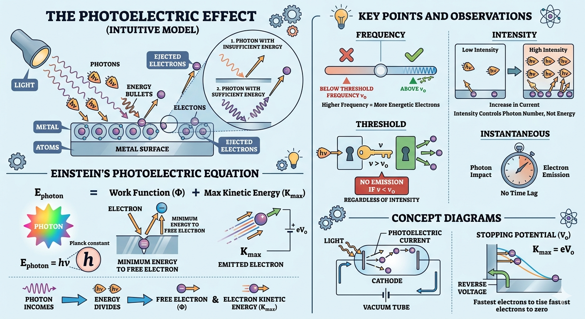

Photoelectric Effect and Its Applications

Image generated by Google AI
Have you ever noticed how automatic doors at malls open the moment you step close, or how solar panels start generating electricity as soon as sunlight hits them? It almost feels like light is “doing work” instantly. Now imagine zooming into the microscopic world—what if light could actually knock tiny particles (electrons) out of a metal surface? Sounds surprising, right? That’s exactly what the photoelectric effect is all about. Let’s walk through it together in a simple, intuitive way while keeping the physics crystal clear.
What Is Photoelectric Effect?
The Photoelectric Effect refers to the emission of electrons from a metal surface when it is exposed to electromagnetic radiation of sufficient frequency. It demonstrates the particle nature of light.
Think of light not just as a wave, but as tiny packets of energy (photons). When these photons hit a metal surface, they behave like little “energy bullets.” If they carry enough energy, they can knock electrons out of the metal.
Key Concept: Only photons with energy greater than the material’s work function can eject electrons.
In simple terms: if the photon doesn’t have enough energy, no matter how many photons you throw at the surface, electrons won’t come out. It’s like trying to open a locked door—you need the right key (minimum energy), not just more attempts.
Einstein’s Photoelectric Equation
To explain this phenomenon, Einstein took a bold step by applying quantum theory. He proposed that light energy comes in discrete packets and gave the famous equation:
Let’s understand this like a real-life energy transaction:
- A photon comes in with energy \( h\nu \)
- Part of this energy is used to “free” the electron (this is the work function \( \phi \))
- The remaining energy becomes the kinetic energy of the emitted electron
Where:
- \( h \): Planck’s constant \( (6.626 \times 10^{-34} \, \text{J·s}) \)
- \( \nu \): Frequency of incident light
- \( \phi \): Work function of the metal (minimum energy to eject electron)
- \( K_{\text{max}} \): Maximum kinetic energy of ejected electrons
So, every photon follows a strict “energy budget.” No randomness—just clean physics.
Threshold Frequency and Work Function
Now imagine tuning a radio. Below a certain frequency, you just get noise—no music. Similarly, in the photoelectric effect, there is a minimum frequency required to even start emission.
- Threshold frequency \( \nu_0 \): Minimum frequency required to emit electrons.
- At \( \nu = \nu_0 \), \( K_{\text{max}} = 0 \), hence \( \phi = h\nu_0 \).
This means at threshold frequency, photons have just enough energy to remove electrons, but the electrons come out with zero kinetic energy—like barely escaping.
Kinetic Energy and Stopping Potential
Once electrons are emitted, how fast are they moving? That’s where kinetic energy comes in. And interestingly, we can measure this using something called stopping potential.
Kinetic energy is related to stopping potential \( V_0 \):
This means we can stop the fastest electrons by applying a reverse potential. The minimum voltage required to stop them gives us their maximum kinetic energy.
So, Einstein’s equation becomes:
Where \( e \) is the elementary charge \( (1.6 \times 10^{-19} \, \text{C}) \).
This is extremely useful in experiments—it connects measurable quantities (voltage) to microscopic energy.
Key Points
Let’s translate the core ideas into everyday intuition:
- Increasing intensity increases number of photoelectrons, not their energy. (Think: more photons → more electrons, but each electron’s energy depends on frequency)
- Increasing frequency increases energy of photoelectrons. (Higher frequency = more energetic photons = faster electrons)
- No electrons are emitted if \( \nu < \nu_0 \), regardless of intensity. (No matter how bright the light is, if frequency is too low, nothing happens)
- Instantaneous emission — no time lag. (The moment photons hit, electrons are emitted instantly)
- Energy of each photon: \( E = h\nu \)
Examples
Let’s now apply what we’ve learned. Try to follow the logic step-by-step, just like solving a puzzle.
- If light of frequency \( \nu = 8 \times 10^{14} \, \text{Hz} \) falls on metal with \( \phi = 2 \, \text{eV} \), find \( K_{\text{max}} \).
Now think: out of this total energy, 2 eV is used just to remove the electron.
Answer: \( 1.31 \, \text{eV} \)
- If \( K_{\text{max}} = 1.5 \, \text{eV} \) and \( \phi = 2.5 \, \text{eV} \), find frequency of light.
Here, we reverse the process—working backward from energy.
Answer: \( \approx 9.66 \times 10^{14} \, \text{Hz} \)
Concept Questions
Pause here and test your understanding. Try answering these like you’re explaining to a friend.
- What is the effect of increasing light intensity below threshold frequency?
No photoelectric emission occurs. - Why is there no time lag in photoelectric emission?
Energy is delivered in discrete photons, not continuously. - What determines the energy of photoelectrons?
Frequency of incident light. - Can light of any frequency cause photoemission if intensity is high enough?
No. Frequency must be above threshold. - What is the nature of light suggested by the photoelectric effect?
Particle (quantum) nature.
Super Tips
These are the kind of quick-recall ideas that can save you in exams:
- Remember: \( K_{\text{max}} = h\nu - \phi \)
- \( K_{\text{max}} = eV_0 \) helps determine stopping potential.
- Photoelectric effect confirms quantum theory of light.
- Use \( \phi = h\nu_0 \) to find threshold frequency.
- Photon energy is independent of light intensity.
Previous Year Questions (PYQs)
Now let’s tackle real exam-level thinking. Notice how concepts, not memorization, drive the solution.
Q1.
Light of frequency \(1.5\nu_0\) is incident on a photosensitive material. What will be the photoelectric current if the frequency is halved and intensity is doubled?
(NEET 2020)
- doubled
- four times
- one-fourth
- zero
Solution:
Step 1: Initial frequency \( \nu = 1.5\nu_0 \). Since \( \nu > \nu_0 \), photoemission occurs.
Step 2: New frequency \( \nu = 0.75\nu_0 \).
Now pause and think: this is below threshold frequency.
Since this is less than threshold frequency, no photoemission occurs regardless of intensity.
Step 3: Photoelectric current becomes zero.
Answer: \( \boxed{\text{D) zero}} \)
Q2.
When the energy of the incident radiation is increased by 20%, the kinetic energy of the photoelectrons emitted from a metal surface increases from \(0.5\,\text{eV}\) to \(0.8\,\text{eV}\). The work function of the metal is:
(NEET 2014)
- 0.65 eV
- 1.0 eV
- 1.3 eV
- 1.5 eV
Solution:
Let initial photon energy be \(E\), and final photon energy be \(1.2E\).
From Einstein's photoelectric equation:
Given:
Subtract the first equation from the second:
Now substitute \(E = 1.5 \, \text{eV}\) into \(K_1 = E - \phi\):
Answer: \( \boxed{\text{B) 1.0 eV}} \)